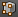
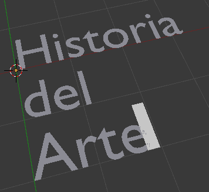
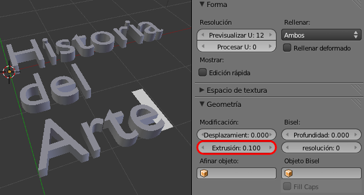
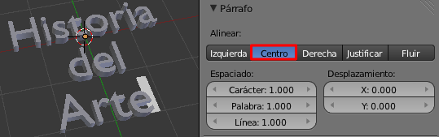
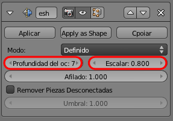
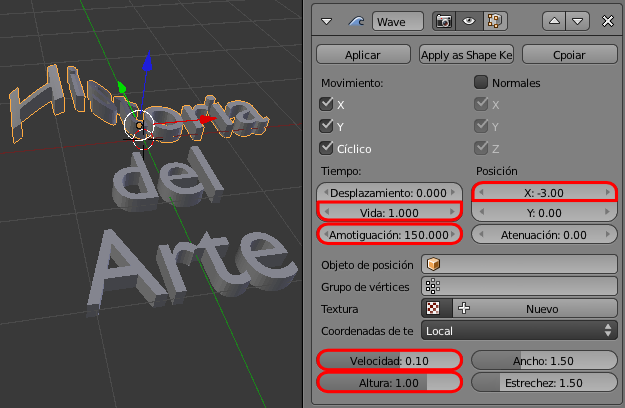
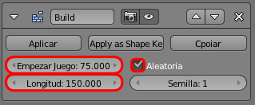
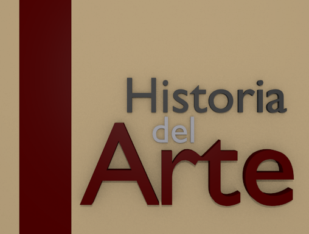
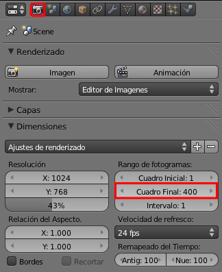

Material didáctico: Cabecera de vídeo
Un vídeo siempre se merece una bonita cabecera para causar buenas sensaciones nada más comenzar.
Blender es un buen aliado para esos fines. En la práctica que viene a continuación hacemos una interesante cabecera con el texto "Historia del Arte".
Eliminamos el cubo y ponemos un texto en su lugar (Añadir/Texto). Desde Modo Edición  escribimos la cabecera en cuestión.
En su panel le aplicamos una Extrusión de valor 0.100 en la botonera Geometría.
Alineamos en el centro usando la botonera Párrafo.

Es el momento de convertir, desde Modo Objeto  , el texto en malla con Texto/Convert to/Superficie desde curva-meta-texto.
, el texto en malla con Texto/Convert to/Superficie desde curva-meta-texto.
Sabemos perfectamente que esto deja una topología ruinosa, que arreglamos aplicando un modificador Rehacer malla con los parámetros que se indican en esta imagen.

Tras Aplicar en Modo Objeto  , esta es la apariencia en Modo Edición (la topología es considerablemente mejor).
, esta es la apariencia en Modo Edición (la topología es considerablemente mejor).
Una de las ventajas de Rehacer malla es que no hay que preocuparse de los puntos dobles.
Hay que separar las tres palabras. Lo más confortable es seleccionar todos los vértices ("A") en Modo Edición y separar con "P"/Por partes perdidas y después, en Modo Objeto  , seleccionar todas las letras de una palabra y hacer "Control_J" (Objeto/Unir). Esto nos da como resultado tres objetos finales. Antes de seguir los seleccionamos y hacemos Origen/Origen a geometría en el cuadro Herramientas ("T").
, seleccionar todas las letras de una palabra y hacer "Control_J" (Objeto/Unir). Esto nos da como resultado tres objetos finales. Antes de seguir los seleccionamos y hacemos Origen/Origen a geometría en el cuadro Herramientas ("T").
Comenzamos por añadir a la palabra "Historia" un modificador Ola con estos parámetros.
- Vida. Comienza moverse en el fotograma 1.
- Amortiguación. Durante 150 fotogramas después de que termine Vida el efecto va descendiendo hasta extinguirse.
- Posición X: -3.00. Es una cuestión estética.
Ahora le añadimos un modificador Construir con estos parámetros:
- Empezar juego: 75. Para que no comience a verse el efecto hasta ese fotograma. Esto hace que la palabra sea invisible hasta ese momento.
- Longitud. 150 para hacer coincidir su final con el del modificador Ola.
Con esto queda acabada al edición de la palabra "Historia", salvo por el Material que le queramos diseñar.
Para concluir debemos hacer lo mismo con las otras dos palabras con los siguientes cambios:
- Palabra "del". En el modificador Ola tendrá una Vida de 100 para que comience en ese fotograma. Y en el modificador Construir tendrá un Comienzo de juego: 125. Con todo esto conseguimos que el efecto comience justo antes de que termine el de la palabra "Historia".
- Palabra "Arte". En le modificador Ola tendrá una Vida de 175. Y en el modificador Construir tendrá un Comienzo de juego: 200.
En realidad nada nos impide escalar y desplazar los elementos para conseguir una composición más armónica.
Por las condiciones de los modificadores esta animación debe tener al menos 400 fotogramas.
Exportación (recordatorio)
Esta imagen incluye lo necesario para una buena exportación. Todo se edita en Render  .
.